Smart Protein Design
Nanotechnology-delivered proteins that enhanced feline neural development, memory, and language. The origin of our leadership team.
United Cat Foods / Research & Engineering
United Cat Foods is as much an engineering company as a freight carrier. Our research spans genetics, fusion power, orbital manufacturing, and open-source software. All of it serves one requirement: the lanes stay open, the bowls stay full, and the rooms stay warm.
Programs
Nanotechnology-delivered proteins that enhanced feline neural development, memory, and language. The origin of our leadership team.
Reactors that mimic the sun, hardened for deep space. We have always understood the value of a small contained sun.
Zero-gravity flavor dispersion, time-release kibble, and the Intergalactic Flavor Infuser for extraterrestrial palates.
MeowPasswordC and the Catbot Assistant platform. We publish our code. Trust is easier to audit than to promise.
Energy Program
U.C.F. fusion reactors are built to withstand the rigors of space travel, providing reliable power for long-duration missions. Clean, near-limitless energy opens new possibilities for research, exploration, and colonization while reducing the ecological footprint of deep-space operations.
Every Loaf-class freighter and every orbital café runs on U.C.F. fusion. The floors are warm because the physics is sound.
Orbital Manufacturing
Water Division
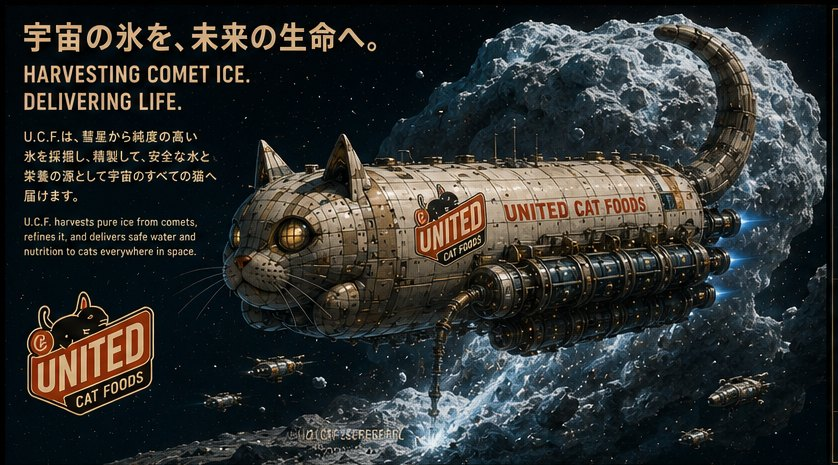
Every bowl of water in the network started as the tail of a comet. The harvester approaches, scans, anchors, drills, and refines, five verbs that took forty years to make routine. The ice comes up at 90.7 percent water by mass, and the refinery aboard does not let go of it until the impurities are out and the number reads 99.9.
The board below is the crew's own process placard, cut into its panels. It hangs in every harvester's mess, next to the sign about not naming the comets, which is ignored.
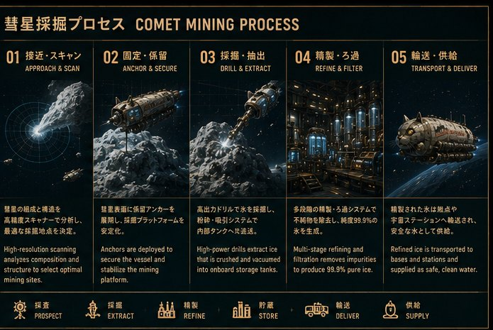
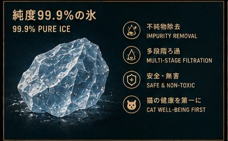
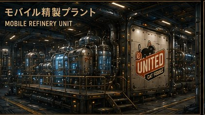
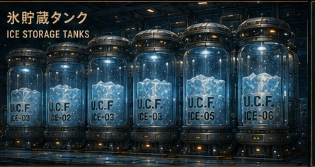
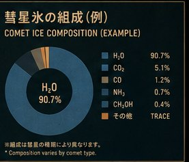
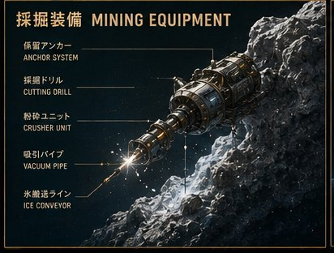
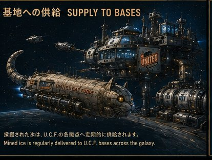
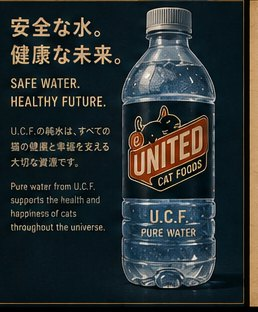
What comes out the far end is a bottle with the badge on it and a promise underneath: pure water from U.C.F. supports the health and happiness of cats throughout the universe. The quality seal beside it lists the four commitments in the order the company ranks them, and cat well-being is printed last only because it is the conclusion.
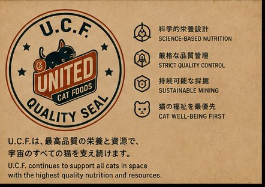
Route Science
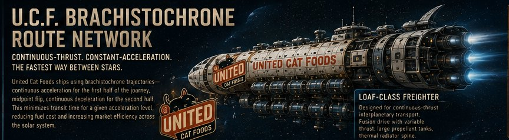
A U.C.F. crossing has one shape: accelerate for the first half, flip at the midpoint, decelerate for the second. The profile chart is a hill with a cliff in the middle, and every schedule in the company is built on it. Freight ships at three service levels, 0.1 g economy for bulk, 0.3 g standard for the refrigerated trade, 0.5 g priority when the shelf at the far end is already empty.
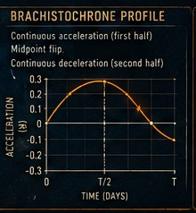
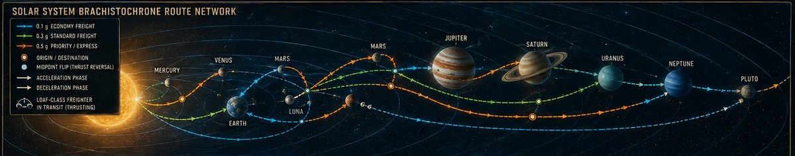
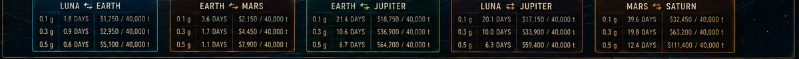
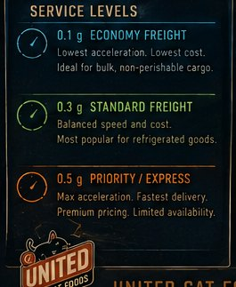
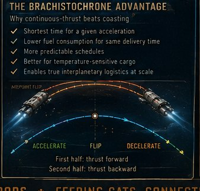
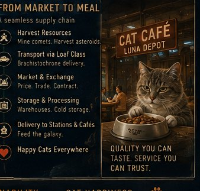
Habitat Engineering
Sonic Research
After a controlled series of tonal experiments, from micro-melodic motifs to calibrated broadband noise, the research cohort identified this specific combination as the most effective inducer of parasympathetic calm in the subject. Within minutes, respiration normalized, pupil dilation decreased, and behavioral indicators shifted toward a deeply restful state. Sonic research bulletin · calming protocol for new feline recruits
Open Source
Our open-source password manager, written in C. The meowpass --analyze command grades any password across five feline security metrics, translating cryptographic concepts into terminology a sensible species can act on.
Verdicts range from "fur-midably complex" to "a kitten could paw this one open." Both are accurate. Only one is acceptable.
Read the technical entry →| Metric | Measures |
|---|---|
| Tail Size | Character complexity |
| Yarn Entropy | Randomness distribution |
| Mashing Resistance | Brute-force defense |
| Foil Ball Uniqueness | Dictionary-attack protection |
| Catnip Diversity | Character-set variation |
Research Partnerships
For fusion licensing, orbital manufacturing, habitat systems, and joint research with Astrovets United. Proposals are reviewed by the Board, usually in the afternoon sun.